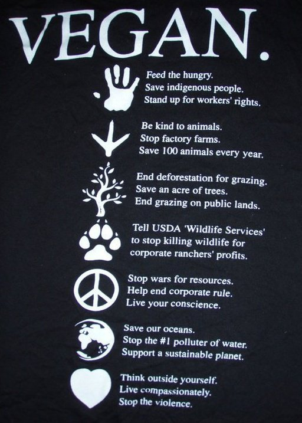

Luckily, it has never been easier to go vegan in today's modern world. Need help going vegan? There are apps you can download to help find vegan products, support groups and vegan cook books that offer great vegan recipes. Just remember to take it slow, ask for help, don't give up, and always remember why you're doing it.
For more helpful tips, visit:
Vegan Society - How To Go Vegan